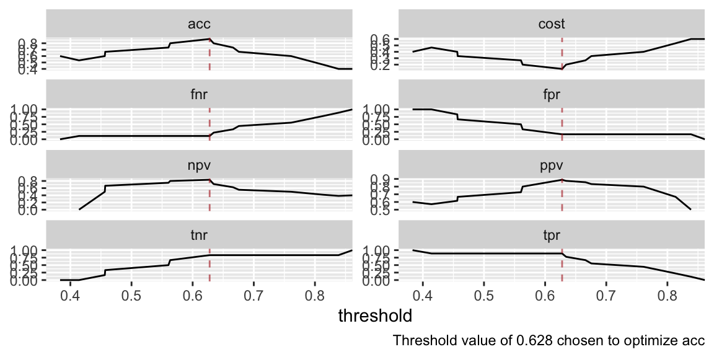

Get class-separating thresholds for classification predictions
get_thresholds.Rdhealthcareai gives you predicted probabilities for classification problems, but sometimes you need to convert probabilities into predicted classes. That requires choosing a threshold, where probabilities above the threshold are predicted as the positive class and probabilities below the threshold are predicted as the negative class. This function helps you do that by calculating a bunch of model-performance metrics at every possible threshold.
"cost" is an especially useful measure as it allows you to weight how bad a
false alarm is relative to a missed detection. E.g. if for your use case
a missed detection is five times as bad as a false alarm (another way to say
that is that you're willing to allow five false positives for every one
false negative), set cost_fn = 5 and use the threshold that minimizes
cost (see examples).
We recommend plotting the thresholds with their performance measures to
see how optimizing for one measure affects performance on other measures.
See plot.thresholds_df for how to do this.
get_thresholds(x, optimize = NULL, measures = "all", cost_fp = 1, cost_fn = 1)
Arguments
| x | Either a predictions data frame (from |
|---|---|
| optimize | Optional. If provided, one of the entries in |
| measures | Character vector of performance metrics to calculate, or "all", which is equivalent to using all of the following measures. The returned data frame will have one column for each metric.
|
| cost_fp | Cost of a false positive. Default = 1. Only affects cost. |
| cost_fn | Cost of a false negative. Default = 1. Only affects cost. |
Value
Tibble with rows for each possible threshold
and columns for the thresholds and each value in measures.
Examples
library(dplyr)#> #>#> #> #>#> #> #>models <- machine_learn(pima_diabetes[1:15, ], patient_id, outcome = diabetes, models = "xgb", tune = FALSE)#>#>#> #>#> #> #>#>#> #> #>get_thresholds(models)#> # A tibble: 12 x 9 #> threshold cost acc tpr fnr tnr fpr ppv npv #> <dbl> <dbl> <dbl> <dbl> <dbl> <dbl> <dbl> <dbl> <dbl> #> 1 Inf 0.6 0.4 0 1 1 0 NaN 0.4 #> 2 0.812 0.6 0.4 0.111 0.889 0.833 0.167 0.5 0.385 #> 3 0.786 0.467 0.533 0.333 0.667 0.833 0.167 0.75 0.455 #> 4 0.740 0.40 0.6 0.444 0.556 0.833 0.167 0.8 0.5 #> 5 0.740 0.333 0.667 0.556 0.444 0.833 0.167 0.833 0.556 #> 6 0.700 0.267 0.733 0.667 0.333 0.833 0.167 0.857 0.625 #> 7 0.580 0.4 0.6 0.667 0.333 0.5 0.5 0.667 0.5 #> 8 0.423 0.467 0.533 0.667 0.333 0.333 0.667 0.6 0.4 #> 9 0.419 0.333 0.667 0.889 0.111 0.333 0.667 0.667 0.667 #> 10 0.330 0.4 0.6 0.889 0.111 0.167 0.833 0.615 0.5 #> 11 0.261 0.333 0.667 1 0 0.167 0.833 0.643 1 #> 12 0.201 0.4 0.6 1 0 0 1 0.6 NaN# Identify the threshold that maximizes accuracy: get_thresholds(models, optimize = "acc")#> # A tibble: 12 x 10 #> threshold cost acc tpr fnr tnr fpr ppv npv optimal #> <dbl> <dbl> <dbl> <dbl> <dbl> <dbl> <dbl> <dbl> <dbl> <lgl> #> 1 Inf 0.6 0.4 0 1 1 0 NaN 0.4 FALSE #> 2 0.812 0.6 0.4 0.111 0.889 0.833 0.167 0.5 0.385 FALSE #> 3 0.786 0.467 0.533 0.333 0.667 0.833 0.167 0.75 0.455 FALSE #> 4 0.740 0.40 0.6 0.444 0.556 0.833 0.167 0.8 0.5 FALSE #> 5 0.740 0.333 0.667 0.556 0.444 0.833 0.167 0.833 0.556 FALSE #> 6 0.700 0.267 0.733 0.667 0.333 0.833 0.167 0.857 0.625 TRUE #> 7 0.580 0.4 0.6 0.667 0.333 0.5 0.5 0.667 0.5 FALSE #> 8 0.423 0.467 0.533 0.667 0.333 0.333 0.667 0.6 0.4 FALSE #> 9 0.419 0.333 0.667 0.889 0.111 0.333 0.667 0.667 0.667 FALSE #> 10 0.330 0.4 0.6 0.889 0.111 0.167 0.833 0.615 0.5 FALSE #> 11 0.261 0.333 0.667 1 0 0.167 0.833 0.643 1 FALSE #> 12 0.201 0.4 0.6 1 0 0 1 0.6 NaN FALSE# Assert that one missed detection is as bad as five false alarms and # filter to the threshold that minimizes "cost" based on that assertion: get_thresholds(models, optimize = "cost", cost_fn = 5) %>% filter(optimal)#> # A tibble: 1 x 10 #> threshold cost acc tpr fnr tnr fpr ppv npv optimal #> <dbl> <dbl> <dbl> <dbl> <dbl> <dbl> <dbl> <dbl> <dbl> <lgl> #> 1 0.261 0.333 0.667 1 0 0.167 0.833 0.643 1 TRUE# Use that threshold to make class predictions (class_preds <- predict(models, outcome_groups = 5))#> #>#> # A tibble: 15 x 12 #> diabetes predicted_diabe… predicted_group patient_id pregnancies #> * <fct> <dbl> <fct> <int> <int> #> 1 Y 0.419 Y 1 6 #> 2 N 0.580 Y 2 1 #> 3 Y 0.740 Y 3 8 #> 4 N 0.580 Y 4 1 #> 5 Y 0.700 Y 5 0 #> 6 N 0.201 N 6 5 #> 7 Y 0.261 Y 7 3 #> 8 N 0.423 Y 8 10 #> 9 Y 0.786 Y 9 2 #> 10 Y 0.419 Y 10 8 #> 11 N 0.330 Y 11 4 #> 12 Y 0.740 Y 12 10 #> 13 N 0.812 Y 13 10 #> 14 Y 0.786 Y 14 1 #> 15 Y 0.812 Y 15 5 #> # ... with 7 more variables: plasma_glucose <int>, diastolic_bp <int>, #> # skinfold <int>, insulin <int>, weight_class <chr>, pedigree <dbl>, #> # age <int>attr(class_preds$predicted_group, "cutpoints")#> [1] 0.2605905# Plot performance on all measures across threshold values get_thresholds(models) %>% plot()# If a measure is provided to optimize, the best threshold will be highlighted in plots get_thresholds(models, optimize = "acc") %>% plot()## Transform probability predictions into classes based on an optimal threshold ## # Pull the threshold that minimizes cost optimal_threshold <- get_thresholds(models, optimize = "cost") %>% filter(optimal) %>% pull(threshold) # Add a Y/N column to predictions based on whether the predicted probability # is greater than the threshold class_predictions <- predict(models) %>% mutate(predicted_class_diabetes = case_when( predicted_diabetes > optimal_threshold ~ "Y", predicted_diabetes <= optimal_threshold ~ "N" )) class_predictions %>% select_at(vars(ends_with("diabetes"))) %>% arrange(predicted_diabetes)#> # A tibble: 15 x 3 #> diabetes predicted_diabetes predicted_class_diabetes #> <fct> <dbl> <chr> #> 1 N 0.201 N #> 2 Y 0.261 N #> 3 N 0.330 N #> 4 Y 0.419 N #> 5 Y 0.419 N #> 6 N 0.423 N #> 7 N 0.580 N #> 8 N 0.580 N #> 9 Y 0.700 N #> 10 Y 0.740 Y #> 11 Y 0.740 Y #> 12 Y 0.786 Y #> 13 Y 0.786 Y #> 14 N 0.812 Y #> 15 Y 0.812 Y# Examine the expected volume of false-and-true negatives-and-positive table(Actual = class_predictions$diabetes, Predicted = class_predictions$predicted_class_diabetes)#> Predicted #> Actual N Y #> Y 4 5 #> N 5 1